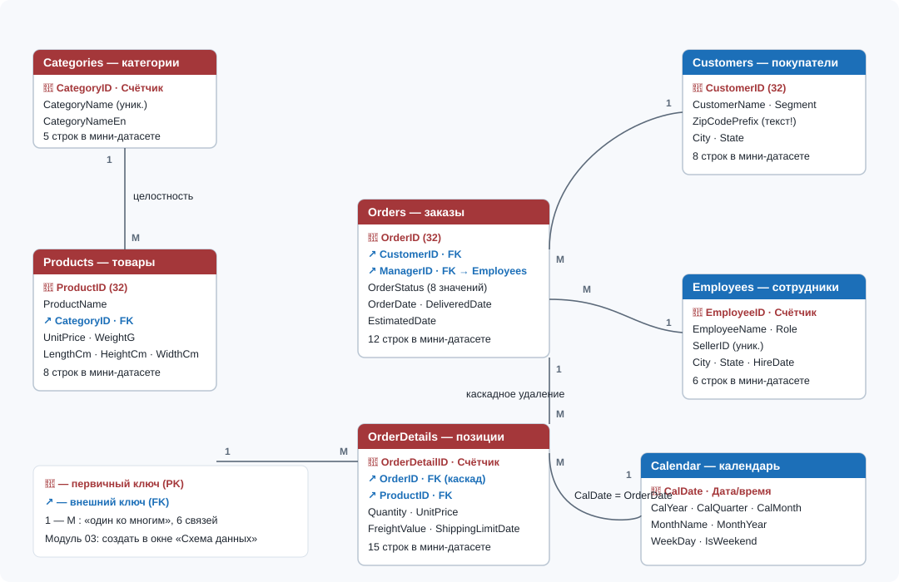

Модуль 03Ключи, индексы и связи между таблицами
Цели обучения
Модуль 03 замыкает подготовительный блок A: таблицы, спроектированные в модуле 02, соединяются в схему данных с защитой от ошибок ввода и случайных удалений. Это фундамент всей дальнейшей работы — запросы модулей 06–08, формы модуля 09 и отчёты модуля 10 будут опираться на связи, созданные именно здесь. Тема выглядит «теоретической», но без неё запрос с соединением четырёх таблиц из задания I01 просто не собрать. По итогам модуля студент сможет:
- объяснять три типа связей — один-к-одному, один-ко-многим, многие-ко-многим — и показывать каждую на конкретных таблицах ShopData, включая реализацию М:М через связующую таблицу OrderDetails;
- создавать все связи схемы данных ShopData в окне «Отношения», осознанно включая «Обеспечение целостности данных», «Каскадное обновление связанных полей» и «Каскадное удаление связанных записей»;
- прогнозировать реакцию Access на нарушение целостности: отказ вставить позицию с несуществующим OrderID, отказ удалить категорию, на которую ссылаются товары, каскадное удаление позиций вместе с заказом;
- назначать и проверять индексы по первичным и внешним ключам, включая составной индекс, и документировать схему отчётом по схеме данных.
Необходимые предварительные знания
Модуль опирается напрямую на модуль 02: вы должны уметь открывать таблицу в конструкторе, знать назначение первичного ключа и помнить типы полей ShopData. Критично, что типы связываемых полей должны совпадать: Categories.CategoryID (Счётчик) соединяется с Products.CategoryID (Числовой, Длинное целое), текстовый Orders.OrderID (Короткий текст 32) — с таким же текстовым OrderDetails.OrderID. Если таблицы ещё не созданы, вернитесь к демонстрации и заданию E01 модуля 02.
- Модуль 02 полностью: типы данных Access, первичные ключи, свойства поля «Индексированное».
- Учебная база
shop_start.accdb(или ваша ShopData.accdb) с шестью заполненными таблицами: Categories, Products, Customers, Employees, Orders, OrderDetails. - Понятие «запрос» из модуля 01 на уровне знакомства: проверять связи мы будем запросом, но SQL-синтаксис изучается в модулях 06–07.
Не стройте связи в базе, где не решена проблема дубликатов: уникальность значений на стороне «один» — обязательное предусловие целостности. Если после импорта в Customers появились повторяющиеся CustomerID (например, два C-0001), Access не даст включить целостность на связи Customers→Orders. Сначала очистите данные (модуль 05 покажет инструменты), и только затем настраивайте схему: связи, построенные поверх грязных данных, дают ошибки, которые крайне сложно диагностировать.
Теория
Связь — это правило, соединяющее строку одной таблицы со строками другой через пару «первичный ключ — внешний ключ». Пока связи не описаны, семь таблиц ShopData — просто отдельные контейнеры, и Access не отличит заказ клиента C-0001 от заказа несуществующего клиента C-9999. Редактор этих правил — окно «Отношения» (вкладка «Работа с базами данных» → группа «Отношения» → «Схема данных»): здесь каждая связь рисуется линией между двумя таблицами. Схема сохраняется в файле базы и работает на вас дальше: конструктор запросов сам проводит линию соединения между таблицами, связь которых уже описана в схеме.
В реляционной модели встречаются три типа связей, и все три нужно уметь узнавать в данных. Рабочая лошадка — один-ко-многим (1:М): клиент C-0001 Ana Ribeiro сделал три заказа (O-10001, O-10004, O-10012), менеджер Ana Souza (EmployeeID 1) ведёт заказы O-10002, O-10007, O-10009. Связь один-к-одному (1:1) редка: две таблицы с взаимно уникальными ключами. Многие-ко-многим (М:М) в чистом виде реляционная модель не хранит — она существует «по смыслу» (в заказе много товаров, товар — во многих заказах) и реализуется через связующую таблицу: в ShopData это OrderDetails, каждая строка которой несёт пару внешних ключей OrderID и ProductID.
| Тип связи | Суть | Пример в ShopData | Как реализовано |
|---|---|---|---|
| 1:1 | Одной строке слева соответствует ровно одна строка справа | Гипотетическая таблица Employees_Extra с паспортными данными: один сотрудник — одна расширенная карточка | Поле EmployeeID в дочерней таблице одновременно PK и FK с уникальным индексом; близкий приём уже есть — SellerID в Employees с уникальным индексом |
| 1:М | Одной строке слева — много строк справа; обратное направление — ровно один | Customers → Orders: клиент C-0002 Bruno Carvalho заказал дважды (O-10002, O-10009) | Внешний ключ в таблице «М»: Orders.CustomerID, Orders.ManagerID, Products.CategoryID, OrderDetails.OrderID, OrderDetails.ProductID |
| М:М | Многим слева соответствует многим справа | Orders ↔ Products: товар P-2001 входит в три заказа (O-10001, O-10006, O-10011), а заказ O-10001 собран из двух товаров | Связующая таблица OrderDetails: одна М:М распадается на две 1:М (Orders → OrderDetails и Products → OrderDetails) |
Ссылочная целостность — набор запретов, который включается галочкой «Обеспечение целостности данных» в диалоге «Изменение связей». Включённая целостность запрещает две вещи. Первая — вставку «сироты»: нельзя добавить в OrderDetails строку с OrderID = O-99999, которого нет в Orders, или товар с CategoryID = 99, которого нет в Categories. Вторая — удаление или изменение родителя, на которого ссылаются дети: категорию 1 (cama_mesa_banho), на которую указывают P-1001 и P-1002, Access удалять не даст. Чтобы целостность включилась, Access требует, чтобы поле на стороне «один» было первичным ключом или уникальным индексом, а типы и размеры соединяемых полей совпадали — ещё одна причина проектировать типы аккуратно, как мы делали в модуле 02.
Каскады — надстройки над целостностью, которые частично снимают её запреты. «Каскадное обновление связанных полей» разрешает менять первичный ключ родителя: при изменении CategoryID 5 на 55 Access сам поправит CategoryID у товара P-5001 — ценно для естественных ключей, которые всё же меняют. «Каскадное удаление связанных записей» разрешает удалять родителя вместе с детьми: удаление заказа O-10005 сносит его позицию (строка 7, P-3002 в количестве 4 шт.) автоматически. Каскадное удаление удобно и опасно одновременно: в ShopData оно включается только на связи Orders → OrderDetails, потому что позиции без заказа не имеют смысла; на связи Categories → Products его ставить нельзя — иначе одно удаление молча вынесет товары и всю историю их продаж.
Индексы работают в этом модуле за кулисами, но знать о них нужно сейчас. Индекс — служебная структура, ускоряющая поиск и соединение, как «оглавление» таблицы. Access автоматически создаёт уникальный индекс по первичному ключу; для внешних ключей индекс стоит завести вручную (свойство «Индексированное» = «Да, совпадения допускаются») — он ускорит и будущие JOIN, и саму проверку целостности. По типам различают обычный индекс (повторы разрешены — именно таков индекс по Products.CategoryID, ведь в категории 2 живут два товара), уникальный (повторы запрещены — по PK и по Employees.SellerID) и составной (по двум и более полям, например OrderID + ProductID в OrderDetails). Помните о цене: каждая вставка строки обновляет все индексы таблицы, поэтому «индексы на всякий случай» вредны; правило блока A — индексируем ключи и поля частых фильтров.

Ту же схему удобно фиксировать текстом на языке Mermaid: такой код читается в документации и автоматически превращается в диаграмму в GitHub и большинстве вики-систем. Двойная черта означает «ровно один», кружок с фигурной скобкой — «ноль или много»:
erDiagram
CATEGORIES ||--o{ PRODUCTS : contains
CUSTOMERS ||--o{ ORDERS : places
EMPLOYEES ||--o{ ORDERS : manages
ORDERS ||--o{ ORDERDETAILS : contains
PRODUCTS ||--o{ ORDERDETAILS : includes
CALENDAR ||--o{ ORDERS : schedulesДля 2007–2013: отличия в работе со схемой данных
Окно «Отношения» и все три галочки целостности работают одинаково во всех версиях 2007–2016, различия косметические. В Access 2007 кнопка «Схема данных» лежит там же — на вкладке «Работа с базами данных», но подсветка линий при выделении менее наглядна, чем в 2016. В 2007–2010 поля подстановки в таблицах создавали скрытые связи, которые путали новичков в схеме; в 2013–2016 поведение то же, но линии отображаются честнее. Каскадные правила в DDL-запросах доступны только через ADO/OLE DB, поэтому практическая рекомендация одинакова для всех версий: каскады включаются галочками в диалоге «Изменение связей», а не кодом.
Пошаговая демонстрация
Соберём схему данных ShopData целиком — пять связей задания E02 плюс две контрольные проверки. Работаем в базе shop_start.accdb; названия команд приведены для Access 2016, в 2007–2013 путь тот же. Не торопитесь на шагах 5–8: именно здесь закладывается защита данных на весь остаток курса.
- Откройте
shop_start.accdbи закройте все открытые таблицы: правый щелчок по ярлыку любой таблицы → Закрыть все объекты. Access не даёт создавать и менять связи при открытых таблицах. - Перейдите на вкладку Работа с базами данных и в группе Отношения нажмите Схема данных. Откроется пустое окно схемы и панель Добавление таблицы.
- Двойным щелчком добавьте шесть таблиц: Categories, Products, Customers, Employees, Orders, OrderDetails. Разложите их: справочники сверху, транзакционные снизу. Нажмите Закрыть в панели.
- Перетащите мышью поле CategoryID из Categories на поле CategoryID в Products. Откроется диалог Изменение связей — сверху видно соединяемые таблицы и поля, снизу — три галочки целостности.
- В диалоге включите Обеспечение целостности данных и Каскадное обновление связанных полей; Каскадное удаление не включайте. Нажмите Создать: линия станет толстой, с подписями «1» и «∞» — целостность включена.
- Аналогично создайте связь Customers → Orders по CustomerID: только Обеспечение целостности данных, без каскадов. Историю заказов клиента нельзя сносить вместе с его строкой.
- Создайте связь Employees → Orders: перетащите EmployeeID из Employees на ManagerID в Orders, включите только целостность. Обратите внимание: имена полей могут не совпадать — важны типы (оба Длинное целое), а не названия.
- Создайте связь Orders → OrderDetails по OrderID: целостность + Каскадное удаление связанных записей. Это единственная связь ShopData с каскадным удалением. Для текстового ключа OrderID каскадное обновление не нужно: коды заказов не переименовывают.
- Создайте связь Products → OrderDetails по ProductID: только целостность. Перед включением Access проверит, что у ProductID есть уникальный индекс (он есть — первичный ключ), а у OrderDetails.ProductID — совпадающий тип Короткий текст 32.
- Проверьте индексы внешних ключей: откройте OrderDetails в конструкторе, щёлкните по полю OrderID и убедитесь, что свойство Индексированное = «Да (Допускаются совпадения)». Повторите для ProductID. Если индекса нет — задайте его сейчас и сохраните таблицу.
- Сохраните раскладку схемы (Ctrl+S), затем в группе Инструменты той же вкладки нажмите Отчёт по схеме данных — Access сгенерирует печатный отчёт со всеми линиями; сохраните его как PDF для документации проекта.
- Две контрольные проверки. Первая: откройте Categories в режиме таблицы и попробуйте удалить строку CategoryID = 5 (automotivo) — Access откажет сообщением о связанных записях в таблице Products. Вторая: удалите в Orders заказ O-10005 (подтвердите предупреждение о каскаде) — строка 7 (P-3002, 4 шт.) исчезнет из OrderDetails сама.
Пример из работы аналитика
Понедельник, 9:30. Директор пишет в мессенджер: «Категория automotivo нам не нужна, на насосы никто не покупает — удали её к обеду. И разберись, почему вчерашняя выгрузка показала заказы на клиентов, которых нет». Классическая ситуация: бизнес хочет править данные напрямую, а задача аналитика — не дать разрушить историю продаж. Категория automotivo (CategoryID = 5) содержит товар P-5001 «Насос для шин», который стоит в позиции 9 заказа O-10007, доставленного 2018-01-30. Удалить строку из Categories — значит оставить эту позицию со ссылкой «в никуда».
Что именно делаем. Сначала пробуем «лобовое» решение: открываем Categories в режиме таблицы и жмём удалить строку 5 — Access вежливо отказывает: в таблице Products есть связанные записи. Затем проверяем, есть ли вообще категории-кандидаты на удаление, запросом с LEFT JOIN и условием IS NULL (см. секцию SQL) — результат пустой, все пять категорий «обстреляны» продажами. Наконец, показываем директору обратную сторону медали: на учебной копии удаляем черновой заказ O-10010 (статус processing) — благодаря каскадному удалению позиция 13 исчезает вместе с заказом, и ничего не остаётся висеть.
Итог разговора: категорию не удаляем, а помечаем как неактивную (решение об архиве — отдельная задача с руководителем), а «заказы на несуществующих клиентов» в новой базе теперь невозможны физически: целостность на связи Customers → Orders не пропустит вставку сироты. Это и есть главный сдвиг мышления аналитика: целостность защищает не таблицы, а доверие к цифрам, которые вы завтра покажете директору.
Исходные таблицы и поля
Для этого модуля важны четыре таблицы, участвующие в связях задания E02, — и пары полей, по которым будут протянуты линии. Обратите внимание на типы: CategoryID слева — Счётчик, справа — Числовое (Длинное целое); OrderID и ProductID везде Короткий текст 32. Пятая связь (Employees → Orders) использует пару EmployeeID/ManagerID из Employees и Orders.
| Categories: CategoryID (PK, Счётчик) | CategoryName | CategoryNameEn |
|---|---|---|
| 1 | cama_mesa_banho | bed_bath_table |
| 2 | beleza_saude | health_beauty |
| 3 | informatica_acessorios | computers_accessories |
| 4 | moveis_decoracao | furniture_decor |
| 5 | automotivo | auto |
| Products: ProductID (PK, текст 32) | ProductName | CategoryID (FK) | Цена-ориентир |
|---|---|---|---|
| P-1001 | Набор постельного белья 2-сп | 1 | 189.90 |
| P-1002 | Подушка ортопедическая | 1 | 129.90 |
| P-2001 | Крем для лица SPF30 | 2 | 89.90 |
| P-3001 | Беспроводная мышь | 3 | 149.00 |
| P-5001 | Насос для шин | 5 | 119.00 |
| Orders: OrderID (PK, текст 32) | CustomerID (FK) | ManagerID (FK) | OrderStatus | OrderDate |
|---|---|---|---|---|
| O-10001 | C-0001 | 2 | delivered | 2017-03-15 |
| O-10002 | C-0002 | 1 | delivered | 2017-04-02 |
| O-10005 | C-0004 | 4 | shipped | 2017-10-30 |
| O-10010 | C-0008 | 6 | processing | 2018-04-22 |
| O-10012 | C-0001 | 2 | delivered | 2018-06-12 |
| OrderDetails: OrderDetailID (PK) | OrderID (FK) | ProductID (FK) | Quantity | UnitPrice | FreightValue |
|---|---|---|---|---|---|
| 1 | O-10001 | P-1001 | 1 | 189.90 | 22.50 |
| 2 | O-10001 | P-2001 | 2 | 89.90 | 15.00 |
| 3 | O-10002 | P-3001 | 1 | 149.00 | 12.30 |
| 7 | O-10005 | P-3002 | 4 | 59.90 | 9.80 |
| 13 | O-10010 | P-3002 | 1 | 59.90 | 8.10 |
Полная карта связей, которую вы построите в E02. Шестая строка — задел на будущее: таблица Calendar появится в модуле 04, и связь Calendar → Orders добавится тогда же.
| Родитель (сторона «1») | Ребёнок (сторона «М») | Поля соединения | Каскады |
|---|---|---|---|
| Categories | Products | CategoryID → CategoryID | каскадное обновление |
| Customers | Orders | CustomerID → CustomerID | нет |
| Employees | Orders | EmployeeID → ManagerID | нет |
| Orders | OrderDetails | OrderID → OrderID | каскадное удаление |
| Products | OrderDetails | ProductID → ProductID | нет |
| Calendar (модуль 04) | Orders | CalDate → OrderDate | нет |
SQL-код и разбор по строкам
Связи проверяются делом: если схема настроена, запрос с соединением обязан вернуть согласованные строки. Запрос A выводит товары вместе с категориями — это прямая проверка связи Categories → Products, которую мы создали на шаге 5 демонстрации. Запрос B — инструмент для сценария «удалить категорию»: он находит категории, на которые не ссылается ни один товар, то есть безопасных кандидатов на удаление.
Запрос A — товары с категориями (проверка связи):
SELECT c.CategoryID, c.CategoryNameEn, p.ProductID, p.ProductName
FROM Categories AS c
INNER JOIN Products AS p ON c.CategoryID = p.CategoryID
ORDER BY c.CategoryID, p.ProductID;SELECT c.CategoryID, c.CategoryNameEn, p.ProductID, p.ProductName— список выводимых полей; префикс c. или p. указывает таблицу-владельца, что обязательно для одноимённых полей (CategoryID есть в обеих).FROM Categories AS c— левая таблица соединения; псевдоним c короче полного имени и делает запрос читаемым.INNER JOIN Products AS p ON c.CategoryID = p.CategoryID— присоединяем Products и задаём условие: соединяем только пары, где внешний ключ ребёнка равен первичному ключу родителя. Именно эту пару «PK — FK» мы оформили линией в схеме данных.ORDER BY c.CategoryID, p.ProductID— сортировка: сначала по категории, внутри категории по коду товара; так легко увидеть группировку товаров по родителю.
Запрос B — категории без товаров (кандидаты на удаление):
SELECT c.CategoryID, c.CategoryName, c.CategoryNameEn
FROM Categories AS c
LEFT JOIN Products AS p ON c.CategoryID = p.CategoryID
WHERE p.ProductID IS NULL;SELECT c.CategoryID, c.CategoryName, c.CategoryNameEn— выводим только поля родителя: нас интересует сама категория, а не её товары.FROM Categories AS c— родитель ставится слева: LEFT JOIN сохранит все его строки, даже если справа ничего не нашлось.LEFT JOIN Products AS p ON c.CategoryID = p.CategoryID— в отличие от INNER JOIN, категория без товаров не выбрасывается, а остаётся в результате с пустыми полями справа.WHERE p.ProductID IS NULL— фильтр «товара нет»: остаются ровно те категории, на которые не ссылается ни один ProductID. В мини-датасете таких нет — запрос вернёт пустой список, и удалять безопасно нечего.
Оба запроса — чистый Access SQL (JET/ACE): без LIMIT, без CONCAT, с классическим LEFT JOIN и IS NULL. Заметьте: пока связи не описаны в схеме, конструктор запросов не нарисует линию между Categories и Products сам — вам пришлось бы соединять поля руками. Схема данных экономит эту рутину на каждом будущем запросе.
Вариант через конструктор запросов
Тот же запрос A собирается мышью за пару минут — и заодно вы увидите, как схема данных работает на конструктор. Никакого SQL писать не нужно: линия соединения приедет из окна «Отношения» автоматически.
- Вкладка Создание → группа Запросы → Конструктор запросов. Откроется чистая сетка QBE и окно Добавление таблицы.
- Добавьте двойным щелчком Categories и Products, нажмите Закрыть. Между прямоугольниками уже натянута линия по CategoryID — это связь из схемы данных; откройте её свойства двойным щелчком: тип «Поля объединяются только в том случае, если они равны» — это и есть INNER JOIN.
- Если линии вдруг нет (связь не была создана) — перетащите CategoryID из Categories на CategoryID в Products прямо в конструкторе. Запрос заработает, но запомните: эта линия локальна и никуда не сохранится, защита остаётся выключенной.
- Опустите в сетку четыре поля: CategoryID и CategoryNameEn из Categories (в таком порядке), затем ProductID и ProductName из Products. Галочки «Показывать» оставьте включёнными.
- В строке Сортировка для CategoryID выберите «по возрастанию», для ProductID — тоже «по возрастанию». Порядок столбцов в сетке определяет иерархию сортировки.
- Нажмите Выполнить (кнопка с восклицательным знаком в группе Результаты) — получите те же 8 строк, что и при выполнении SQL. Переключаться между режимами можно правым щелчком по ярлыку запроса: Режим таблицы / Конструктор / Режим SQL.
- Сохраните запрос как
qry_ТоварыПоКатегориям(Ctrl+S). Перейдите в Режим SQL и сверьте текст с секцией выше — Access сгенерирует ровно тот же оператор, возможно добавив слово DISTINCTROW, когда в запросе участвуют таблицы со связью «один-ко-многим».
Аналогично собирается и запрос B: те же две таблицы, но вместо INNER JOIN смените тип соединения (двойной щелчок по линии → «Параметры объединения» → второй вариант «Все записи из Categories…»), добавьте условие Is Null в строку «Условие отбора» под полем ProductID из Products. Конструктор сам переведёт ваши щелчки в LEFT JOIN и IS NULL.
Ожидаемый результат
Запрос A возвращает 8 строк — по одной на каждый товар мини-датасета, каждая с корректной английской категорией. Запрос B возвращает 0 строк: все пять категорий ссылаются хотя бы на один товар, безопасных кандидатов на удаление нет. Попытка удалить категорию 5 (automotivo) в таблице Categories блокируется сообщением о связанных записях; удаление заказа O-10005 (или O-10010, если O-10005 уже удалён в демонстрации) автоматически убирает связанную строку OrderDetails.
Результат запроса A (все 8 строк — сверьте с вашим выполнением):
| CategoryID | CategoryNameEn | ProductID | ProductName |
|---|---|---|---|
| 1 | bed_bath_table | P-1001 | Набор постельного белья 2-сп |
| 1 | bed_bath_table | P-1002 | Подушка ортопедическая |
| 2 | health_beauty | P-2001 | Крем для лица SPF30 |
| 2 | health_beauty | P-2002 | Витамин C 1000 мг |
| 3 | computers_accessories | P-3001 | Беспроводная мышь |
| 3 | computers_accessories | P-3002 | USB-хаб 4 порта |
| 4 | furniture_decor | P-4001 | Торшер деревянный |
| 5 | auto | P-5001 | Насос для шин |
Контрольные проверки из шага 12 демонстрации должны дать два разных поведения Access. Удаление категории 5 — отказ с текстом вида «В таблице Products имеются связанные записи, поэтому удалить или изменить её невозможно»: целостность стоит на страже. Удаление заказа O-10005 после предупреждения «Вы собираетесь удалить запись(и), а также связанные записи» — успех: в OrderDetails остаётся 14 строк из 15, строки с OrderDetailID 7 больше нет. Если у вас получилось иначе — вернитесь к секции «Типичные ошибки».
Типичные ошибки
Симптом: в диалоге «Изменение связей» не включается «Обеспечение целостности данных», Access сообщает о неопределённом типе связи. Причина: типы или размеры соединяемых полей не совпадают — например, Categories.CategoryID (Счётчик) соединили с Products.CategoryID, который после импорта получился Числовым с размером «Байт», или текстовые ключи имеют разную длину. Лечение: откройте обе таблицы в конструкторе и выровняйте типы и размеры полей (модуль 02), затем создайте связь заново.
Симптом: линия связи нарисована, но осталась «тонкой», без цифр 1 и ∞. Причина: целостность не включена — чаще всего на стороне «один» есть дубликаты (повторяющийся CustomerID после импорта) или при протягивании связи были выбраны поля без индексов. Лечение: проверьте уникальность родительского поля (запрос с GROUP BY по CustomerID покажет повторы), очистите данные, включите галочку целостности в свойствах связи.
Симптом: «для удобства» включено каскадное удаление на всех связях; удаление одной категории стирает товары и позиции продаж. Причина: непонимание семантики каскада: он должен применяться только там, где ребёнок без родителя лишён смысла. Лечение: каскадное удаление остаётся только на Orders → OrderDetails; на остальных связях снимите галочку. Восстановите данные из резервной копии: удаление категории 1 с каскадом сносит P-1001 и P-1002 вместе с позициями 1, 6, 11, 15 — выручка 769,50 из эталонных 3 025,50 исчезает из отчётов.
Симптом: связь Employees → Orders создана, но запросы возвращают бессмысленные пары «сотрудник — заказ» или пустоту. Причина: при протягивании линии EmployeeID «прилип» не к ManagerID, а к другому полю Orders, либо связь построена по неиндексированному текстовому полю. Лечение: дважды щёлкните линию в окне схемы, в диалоге «Изменение связей» исправьте пару полей на EmployeeID ↔ ManagerID и сохраните; при необходимости удалите линию (щелчок правой кнопкой → «Удалить») и создайте заново.
Симптом: Access не даёт удалить «ненужную» строку — например, категорию 5 — и пользователь снимает галочку целостности, удаляет строку, а включить обратно забывает. Причина: попытка обойти защиту вместо устранения причины; после снятия галочки база открыта для сирот со всех сторон. Лечение: целостность не выключать никогда «ради одного удаления»: сначала переназначьте или удалите ссылающиеся строки (здесь — P-5001), потом удаляйте родителя; проверьте, что галочка вернулась на место.
Симптом: линию связи в окне схемы удалили «за ненадобностью», и новые запросы начали возвращать сотни строк: 12 заказов, умноженных на 15 позиций, дают 180 строк чепухи. Причина: без линии соединения (и без связи в схеме) Access выполняет декартово произведение таблиц — каждая строка прикладывается к каждой. Лечение: восстановите связь в окне «Схема данных» с целостностью; в уже написанных запросах проверьте условие ON — оно могло сохраниться, но новые запросы конструктор соберёт без соединения.
Практические советы
Настраивайте схему данных до того, как писать запросы и формы. Конструктор запросов берёт соединения из схемы автоматически, мастер форм сам предложит подчинённую форму для связи Orders → OrderDetails. Пять минут в окне «Отношения» экономят часы правки условий ON вручную.
Двойной щелчок по любой линии связи открывает диалог «Изменение связей» — самый быстрый способ проверить, какие каскады включены и по каким полям идёт соединение. Раз в неделю «прогуливайтесь» по схеме глазами: лишняя линия без целостности видна сразу — она тонкая.
Держите документацию схемы актуальной: кнопка Отчёт по схеме данных на вкладке «Работа с базами данных» генерирует отчёт со всеми таблицами и линиями. Сохраняйте его в PDF после каждого изменения схемы — это ваш контракт с командой и подарок себе через полгода.
Задайте составной уникальный индекс OrderID + ProductID в OrderDetails (конструктор таблиц → «Индексы» → имя индекса, два поля, «Уникальный индекс»). Все 15 пар в мини-датасете различны, поэтому индекс построится без конфликтов, а вот случайно задвоенный товар в заказе больше не пройдёт. Первичный ключ OrderDetailID при этом оставьте как есть.
Проверяйте сирот до включения целостности: мастер «Поиск несоответствий» (Создание → Мастер запросов → «Поиск записей в одной таблице, не имеющих соответствия в другой») мгновенно покажет строки OrderDetails с чужими OrderID. Их нужно почистить — иначе галочка «Обеспечение целостности данных» просто не включится.
Самостоятельная работа
Выполните задание E02 «Схема данных ShopData»: создайте все пять связей с обеспечением целостности, включите каскадное удаление ровно на одной связи и проведите обе контрольные проверки — блокировку удаления категории и каскадное удаление позиций. Фиксируйте сообщения Access: они понадобятся на защите работы. Отметьте выполненные шаги в чек-листе — прогресс сохраняется в браузере.
E02. Схема данных ShopData
Цель: превратить семь отдельных таблиц в защищённую реляционную базу — построить пять связей с обеспечением целостности, включить каскадное удаление только на связи Orders → OrderDetails и убедиться на практике, что Access блокирует разрушающие действия.
Исходные таблицы: Categories, Products, Customers, Employees, Orders, OrderDetails (файл shop_start.accdb; все таблицы должны быть созданы и заполнены в задании E01 модуля 02).
Используемые поля: Categories.CategoryID, Products.CategoryID, Customers.CustomerID, Orders.CustomerID, Orders.ManagerID, Employees.EmployeeID, Orders.OrderID, OrderDetails.OrderID, Products.ProductID, OrderDetails.ProductID.
Пошаговый план:
- Закройте все объекты, откройте окно «Схема данных» и добавьте шесть таблиц.
- Создайте связь Categories → Products по CategoryID: целостность + каскадное обновление.
- Создайте связь Customers → Orders по CustomerID: только целостность.
- Создайте связь Employees → Orders по паре EmployeeID ↔ ManagerID: только целостность.
- Создайте связь Orders → OrderDetails по OrderID: целостность + каскадное удаление.
- Создайте связь Products → OrderDetails по ProductID: только целостность.
- Проверьте индексы по внешним ключам в Products.CategoryID, Orders.CustomerID, Orders.ManagerID, OrderDetails.OrderID, OrderDetails.ProductID.
- Проведите проверку 1: попытайтесь удалить категорию 5 (automotivo) — зафиксируйте отказ Access.
- Проведите проверку 2: удалите заказ O-10010 (processing) и убедитесь, что строка 13 OrderDetails исчезла каскадом (в таблице осталось 14 строк).
- Сохраните раскладку схемы и сформируйте «Отчёт по схеме данных», сохраните его как PDF.
В окне схемы пять толстых линий с подписями «1» и «∞»; у связи Orders → OrderDetails в свойствах отмечены каскадное удаление (и только у неё). Попытка удалить категорию 5 выдаёт сообщение о связанных записях в Products; после удаления O-10010 в OrderDetails остаётся 14 строк. Отчёт по схеме данных сохранён в PDF.
Критерии оценки:
- все пять связей созданы по правильным парам полей, тип соединения везде 1:М;
- целостность включена на всех пяти связях, линии толстые;
- каскадное удаление включено только на Orders → OrderDetails, каскадное обновление — только на Categories → Products;
- обе контрольные проверки выполнены и зафиксированы (текст отказа, число оставшихся строк);
- отчёт по схеме данных существует и отражает актуальное состояние.
Если целостность не включается — почти всегда виноваты типы полей или дубликаты на стороне «один». Сначала сверьте типы в конструкторе обеих таблиц, затем поиском несоответствий проверьте сирот. Для связи Employees → Orders важно не имя поля, а тип: EmployeeID и ManagerID оба Длинное целое.
Показать эталонное решение
Решение выполняется в Access 2016 (в 2007–2013 путь к командам тот же). Шаги 1–6 повторяют план: закрыть все объекты; «Работа с базами данных» → «Схема данных»; добавить Categories, Products, Customers, Employees, Orders, OrderDetails. Затем пять раз повторяем один приём: перетаскиваем поле родителя на поле ребёнка, в диалоге «Изменение связей» включаем «Обеспечение целостности данных», при необходимости каскад, и нажимаем «Создать».
Точные параметры связей: (1) Categories.CategoryID → Products.CategoryID — целостность + каскадное обновление; (2) Customers.CustomerID → Orders.CustomerID — целостность; (3) Employees.EmployeeID → Orders.ManagerID — целостность; (4) Orders.OrderID → OrderDetails.OrderID — целостность + каскадное удаление; (5) Products.ProductID → OrderDetails.ProductID — целостность. У связи 4 Access предупредит: «Вы собираетесь включить каскадное удаление…» — соглашайтесь.
Проверка индексов: в конструкторе OrderDetails поле OrderID — свойство «Индексированное» = «Да (Допускаются совпадения)», то же для ProductID; в Products поле CategoryID индексировано «Да (Допускаются совпадения)». Если Access при создании связи сообщит, что создаст индекс по внешнему ключу сам — примите.
Проверка 1. Откройте Categories в режиме таблицы, выделите строку 5 (automotivo) и нажмите Delete. Access выдаст сообщение: удалить запись невозможно, поскольку в таблице Products имеются связанные записи. Нажмите «ОК» и закройте таблицу без изменений — запись должна остаться на месте.
Проверка 2. Откройте Orders, найдите заказ O-10010 (клиент C-0008, статус processing, дата 2018-04-22) и удалите его. Access предупредит о каскадном удалении связанных записей — подтвердите. Откройте OrderDetails: строк с OrderDetailID 7 (от O-10005, если удаляли в демонстрации) и 13 (от O-10010) больше нет; всего строк — 14, если O-10005 ещё был, или 13, если нет.
Документация: нажмите Ctrl+S в окне схемы, затем кнопка «Отчёт по схеме данных» → «PDF или XPS» → сохраните как schema-shopdata.pdf. В отчёте должны читаться все пять линий с признаком целостности.
Дополнительное усложнение: добавьте в OrderDetails составной уникальный индекс по полям OrderID + ProductID (конструктор → вкладка «Конструктор» → «Индексы»), создайте шестую связь Calendar → Orders по CalDate = OrderDate после загрузки календаря в модуле 04 и объясните письменно, почему связь Calendar → Orders нельзя строить по полю MonthYear.
Тест по модулю
Контрольные вопросы
Ответьте письменно, своими словами, опираясь на схему ShopData и выполненное задание E02. На каждый ответ достаточно 2–4 предложений, но в каждом должно прозвучать конкретное имя таблицы или поля.
- Чем связь один-ко-многим отличается от многие-ко-многим? Покажите на парах «Customers → Orders» и «Orders ↔ Products», почему вторую нельзя сохранить одной линией и что делает OrderDetails.
- Что именно проверяет Access в момент, когда вы ставите галочку «Обеспечение целостности данных»? Назовите оба предусловия и обе категории запретов, которые включаются.
- Чем каскадное обновление отличается от каскадного удаления? Приведите по одному примеру из ShopData, где каждый каскад уместен, и объясните, почему в задании E02 удаление включено только на Orders → OrderDetails.
- Вы пытаетесь удалить категорию 5 (automotivo) при включённой целостности — что произойдёт и как удалить категорию законным путём? Что изменится, если целостность снять?
- Зачем нужен индекс по внешнему ключу OrderDetails.ProductID, если первичный ключ OrderDetailID уже проиндексирован? Что теряет таблица при каждом лишнем индексе?
- Что случится с запросами, если удалить линию связи в окне схемы данных? Объясните, откуда берётся декартово произведение и сколько строк даст соединение Orders (12 строк) с OrderDetails (15 строк) без условия ON.
Критерии проверки
Эталон оценивается по пяти критериям, взятым из задания E02. Сверяйте работу по столбцу «Отлично» — именно он даёт зачёт без доработок.
| Критерий | Отлично | Допустимо | Брак |
|---|---|---|---|
| Состав связей | Все 5 связей E02 по правильным парам полей (включая EmployeeID ↔ ManagerID) | 4 связи, одна перепутана, но типы полей верны | Связи отсутствуют или построены по чужим полям |
| Целостность | Включена на всех связях, линии толстые с 1 и ∞ | Включена на 4 из 5, причина указана письменно | Линии тонкие: целостность не включена вообще |
| Каскады | Удаление — только Orders → OrderDetails, обновление — только Categories → Products | Каскадное обновление не включено, удаление — на одной связи | Каскадное удаление на родительских связях (Categories→Products, Customers→Orders) |
| Контрольные проверки | Обе выполнены: отказ на категории 5 зафиксирован, после удаления O-10010 осталось 14 строк | Выполнена одна проверка, вторая описана словами | Проверки не проводились |
| Документация и индексы | Отчёт по схеме в PDF; индексы по FK проверены (OrderID, ProductID, CategoryID, CustomerID, ManagerID) | Отчёт есть, индексы проверены частично | Отчёта нет, индексы не проверялись |
Эталонное решение
Показать полное решение самостоятельной работы (E02)
Подготовка. Откройте shop_start.accdb, правый щелчок по ярлыку таблицы → «Закрыть все объекты». Вкладка «Работа с базами данных» → группа «Отношения» → «Схема данных». В панели «Добавление таблицы» добавьте двойным щелчком Categories, Products, Customers, Employees, Orders, OrderDetails и нажмите «Закрыть».
Связь 1: перетащите Categories.CategoryID на Products.CategoryID. В диалоге «Изменение связей» включите «Обеспечение целостности данных» и «Каскадное обновление связанных полей», нажмите «Создать». Линия станет толстой: «1» у Categories, «∞» у Products.
Связь 2: Customers.CustomerID → Orders.CustomerID, только «Обеспечение целостности данных» → «Создать». Связь 3: Employees.EmployeeID → Orders.ManagerID (перетаскивайте именно EmployeeID из Employees на ManagerID в Orders), только целостность → «Создать». Если Access скажет, что не может включить целостность, — проверьте, что оба поля имеют размер «Длинное целое».
Связь 4: Orders.OrderID → OrderDetails.OrderID, целостность + «Каскадное удаление связанных записей» → «Создать»; Access предупредит о каскаде — подтвердите. Связь 5: Products.ProductID → OrderDetails.ProductID, только целостность → «Создать». Итого в окне пять толстых линий, у четырёх из них каскадов нет.
Индексы по внешним ключам. Откройте OrderDetails в конструкторе: OrderID — «Индексированное» = «Да (Допускаются совпадения)», ProductID — так же. В Products: CategoryID — «Да (Допускаются совпадения)». В Orders: CustomerID и ManagerID — при отсутствии индекса задайте. Сохраните изменения таблиц.
Проверка 1. Откройте Categories в режиме таблицы, строку 5 (automotivo), нажмите Delete. Ожидаемое сообщение: удалить запись нельзя, поскольку в таблице Products имеются связанные записи. Нажмите «ОК»; запись остаётся. Это ссылочная целостность в действии: на категорию указывает P-5001.
Проверка 2. Откройте Orders, строку O-10010 (C-0008, processing, 2018-04-22), нажмите Delete. Access спросит подтверждение: «Будет удалена запись, а также связанные записи из таблицы OrderDetails». Подтвердите и откройте OrderDetails: строка 13 (P-3002, 1 шт., 59.90) исчезла; строк в таблице стало 14 (или 13, если O-10005 вы уже удаляли в демонстрации).
Проверка запросом. Выполните из секции SQL запрос A — ожидается 8 строк (P-1001…P-5001 с корректными CategoryNameEn); запрос B — ожидается пустой результат: все пять категорий используются, кандидатов на удаление нет.
SELECT c.CategoryID, c.CategoryNameEn, p.ProductID, p.ProductName
FROM Categories AS c
INNER JOIN Products AS p ON c.CategoryID = p.CategoryID
ORDER BY c.CategoryID, p.ProductID;Документация. В окне схемы нажмите Ctrl+S, затем кнопка «Отчёт по схеме данных» (группа «Инструменты») → «PDF или XPS» → сохраните как schema-shopdata.pdf. В отчёте должны быть видны все пять линий с признаком целостности и пары полей. Работа сдана, когда совпали: состав связей, поведение обеих проверок и наличие PDF-отчёта.
Краткое резюме
Вы превратили семь таблиц в базу: в окне «Схема данных» построены пять связей один-ко-многим, а М:М между заказами и товарами живёт в связующей таблице OrderDetails. «Обеспечение целостности данных» запрещает сирот и удаление родителей (попытка удалить категорию 5 блокируется, пока в ней товар P-5001), каскадное обновление разносит смену ключа по детям, а каскадное удаление — единственное, на связи Orders → OrderDetails — убирает позиции вместе с заказом. Индексы: уникальный по первичному ключу создаётся сам, обычные по внешним ключам (CategoryID, CustomerID, ManagerID, OrderID, ProductID) вы проверили вручную, составной уникальный OrderID + ProductID — ваш инструмент против задвоенных позиций. Схема данных теперь работает на запросы: конструктор сам тянет линии соединения, и следующий модуль использует это сразу — мы начнём загружать в готовую структуру настоящие файлы: мастер импорта CSV и Excel, таблица ошибок и staging-подход.